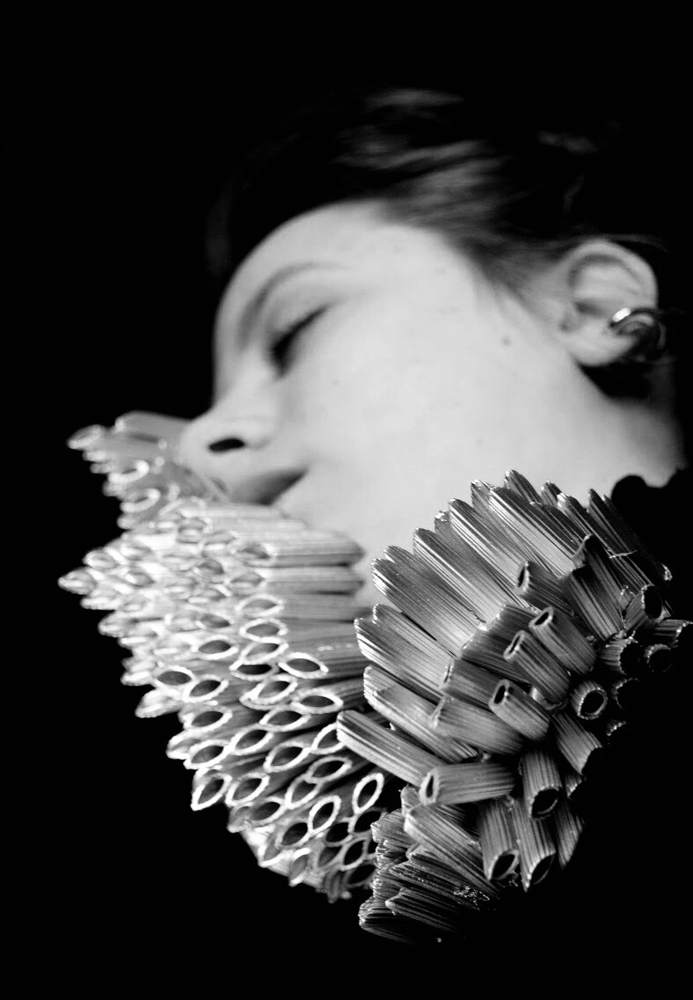

EVENTS
"Phobia"

Time March 3rd to May 5th,2019
Location Dirty House, 2rd floor
Artists Echo Yan
Ear is often regarded as a negative emotion, which seems to me to be the source of creation.All phobias are irrational and absurd, and so are creations.This series of sculptures is my attempt to depict the inner trembling.